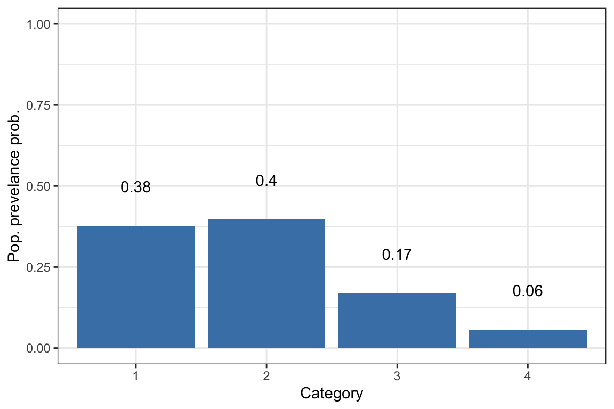
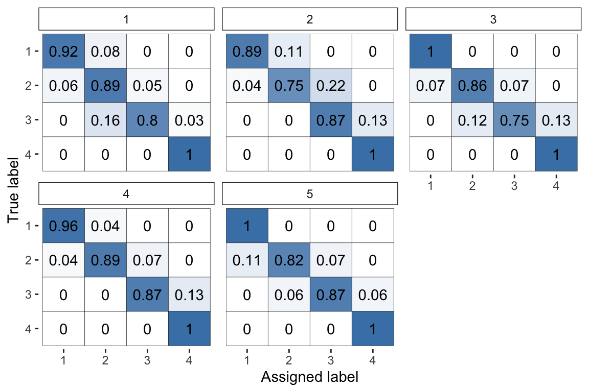
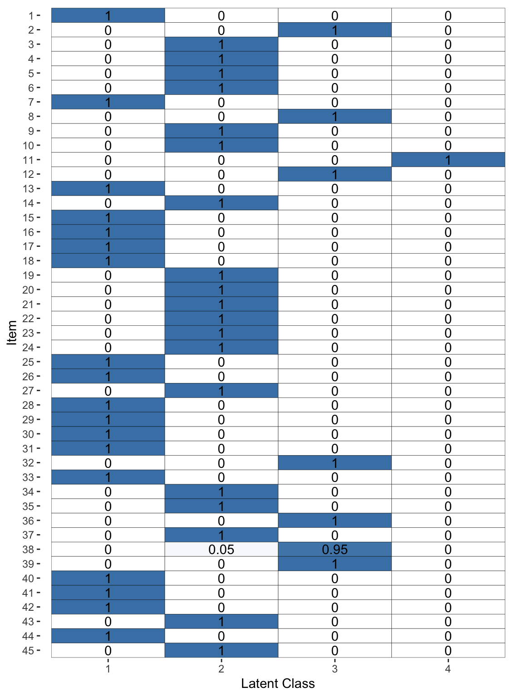

The rater package is designed to allow easy fitting and analysis of Bayesian models of categorical data annotation using Stan. Here we demonstrate the basic workflow for using the package.
We will use the anesthesia data set taken from the paper Maximum Likelihood Estimation of Observer Error-Rates Using the EM Algorithm by A. P. Dawid and A. M. Skene, the paper which introduced the type of models used in this package. This dataset is included in rater. Run:
#> * The rater package uses `Stan` to fit bayesian models.
#> * If you are working on a local, multicore CPU with excess RAM please call:
#> * options(mc.cores = parallel::detectCores())
#> * This will allow Stan to run inference on multiple cores in parallel.to load the data. The data comes in the form of a numeric matrix with three columns item_index, rater_index and rating. In the nomenclature of the package we would descibe this as long data. (For further information about data types see: link). We need to annotate this data as being long_data before we can use it for mode fitting. We do this using the command:
The core function of the rater package is the mcmc() function which fits a model to given data. This function has two arguments: data, data annotated as being in an appropriate format and model, which specifies the model you would like to fit.
Currently we support Multinomial, Dawid and Skene and Hierachical Dawid and Skene models in the package. Models are specifed as a function with the name of the model you woudld like to fit.
#>
#> SAMPLING FOR MODEL 'dawid_skene' NOW (CHAIN 1).
#> Chain 1:
#> Chain 1: Gradient evaluation took 0.000517 seconds
#> Chain 1: 1000 transitions using 10 leapfrog steps per transition would take 5.17 seconds.
#> Chain 1: Adjust your expectations accordingly!
#> Chain 1:
#> Chain 1:
#> Chain 1: Iteration: 1 / 500 [ 0%] (Warmup)
#> Chain 1: Iteration: 50 / 500 [ 10%] (Warmup)
#> Chain 1: Iteration: 100 / 500 [ 20%] (Warmup)
#> Chain 1: Iteration: 150 / 500 [ 30%] (Warmup)
#> Chain 1: Iteration: 200 / 500 [ 40%] (Warmup)
#> Chain 1: Iteration: 250 / 500 [ 50%] (Warmup)
#> Chain 1: Iteration: 251 / 500 [ 50%] (Sampling)
#> Chain 1: Iteration: 300 / 500 [ 60%] (Sampling)
#> Chain 1: Iteration: 350 / 500 [ 70%] (Sampling)
#> Chain 1: Iteration: 400 / 500 [ 80%] (Sampling)
#> Chain 1: Iteration: 450 / 500 [ 90%] (Sampling)
#> Chain 1: Iteration: 500 / 500 [100%] (Sampling)
#> Chain 1:
#> Chain 1: Elapsed Time: 1.20967 seconds (Warm-up)
#> Chain 1: 0.834921 seconds (Sampling)
#> Chain 1: 2.04459 seconds (Total)
#> Chain 1:#> Warning: Bulk Effective Samples Size (ESS) is too low, indicating posterior means and medians may be unreliable.
#> Running the chains for more iterations may help. See
#> http://mc-stan.org/misc/warnings.html#bulk-ess#> Warning: Tail Effective Samples Size (ESS) is too low, indicating posterior variances and tail quantiles may be unreliable.
#> Running the chains for more iterations may help. See
#> http://mc-stan.org/misc/warnings.html#tail-essYou will see the normal progress output you get whenever Stan is sampling. Note that all models are compiled when the package is installed, rather than at runtime, meaning that you will not need to wait for a model to be compiled when running analyses.1
You can also compute MAP esitmates by specifiying method = "optim"in the rater function.
If you would like to change the prior parameters of the models you can do this by passing appropriate paraemters to the model function. For example to fit the dawid and skene model with prior parameter \(\alpha\) = c(4, 4, 4, 4) you would run:
Having fit the Dawid and Skene model to the data we can now plot and extract key parameter estimates from the model.
To plot the population prevalence estimates (the parameter \(\pi\) in the model) we run:

To plot the probalistic confusion matrices of the raters (the parameter \(\theta\) in the model) we run:

To plot the latent class estimates (the parameter \(z\) in the model) we run:

For a discussion of what these parameters in the model represent, please see the vignette models.
Similarly, we can extract all of the estimates used to make these plots for further processing with the extract function:
In the example above we specified Stan to only run 1 chain with 500 iterations in order to speed up the creation of this vignette and reduce the volume of output. In general, we recommend running mcmc() using the Stan sampling defaults, which will be used if you only specify the data and model arguments in mcmc() i.e.↩